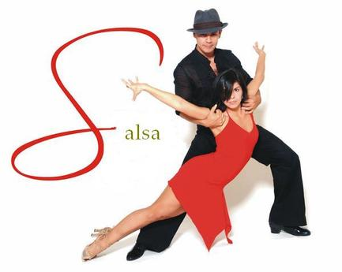

Dance is the movement of the body in a rhythmic way,like music and within a given space for the purpose of expressing an idea or emotion with the release of energy, or simply taking delight in the movement itself. Dance is a powerful impulse, but the art of dance is that impulse channeled by skillful performers into something that becomes intensely expressive and that may delight spectators who feel no wish to dance themselves. These two concepts of the art of dance—dance as a powerful impulse and dance as a skillfully choreographed art practiced largely by a professional few—are the two most important connecting ideas running through any consideration of the subject. In dance, the connection between the two concepts is stronger than in some other arts, and neither can exist without the other. Although the above broad definition covers all forms of the art, philosophers and critics throughout history have suggested different definitions of dance that have amounted to little more than descriptions of the kind of dance with which each writer was most familiar. Thus, Aristotle’s statement in the Poetics that dance is rhythmic movement whose purpose is “to represent men’s characters as well as what they do and suffer” refers to the central role that dance played in classical Greek theatre, where the chorus through its movements reenacted the themes of the drama during lyric interludes. 